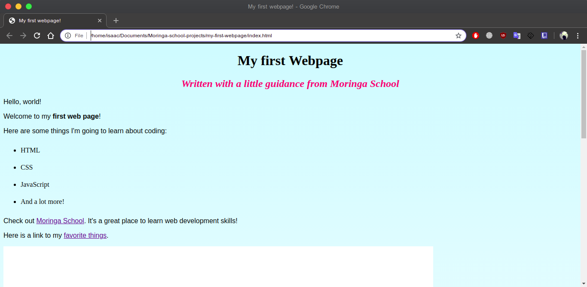
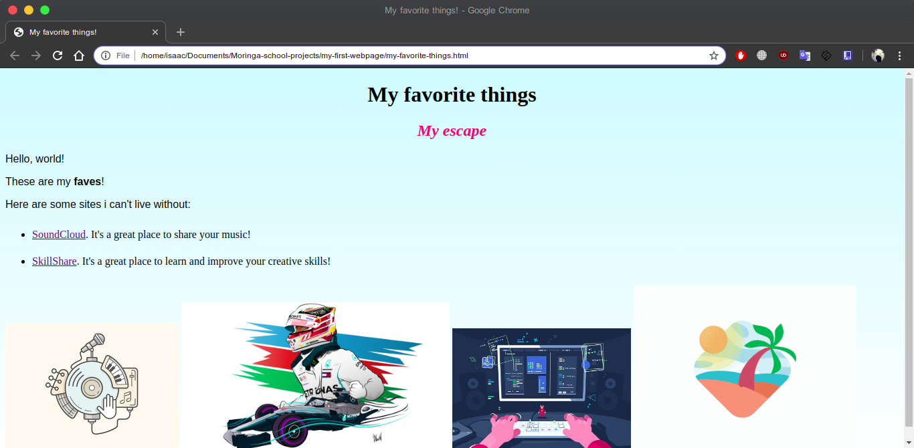
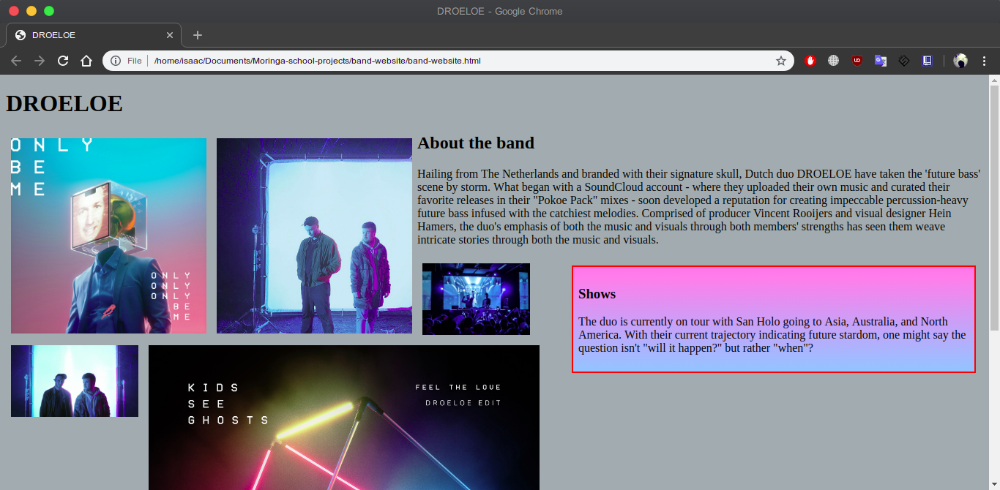
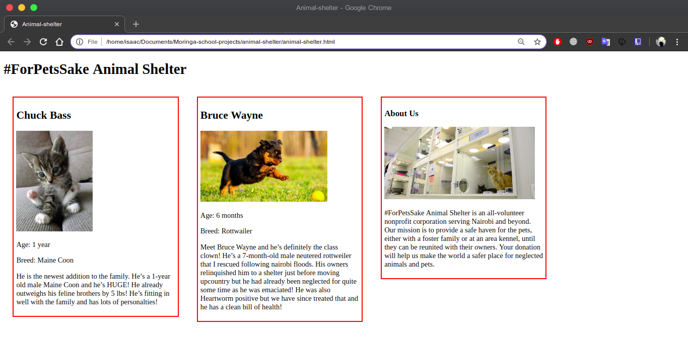

Featured Projects
Hailing from The Netherlands and branded with their signature skull, Dutch duo DROELOE have taken the 'future bass' scene by storm. What began with a SoundCloud account - where they uploaded their own music and curated their favorite releases in their "Pokoe Pack" mixes - soon developed a reputation for creating impeccable percussion-heavy future bass infused with the catchiest melodies. Comprised of producer Vincent Rooijers and visual designer Hein Hamers, the duo's emphasis of both the music and visuals through both members' strengths has seen them weave intricate stories through both the music and visuals.


Languages Used:
- HTML
- CSS
This was my debut to the World Wide Web! A simple class project that i undertook at Moringa School that required me to basically create my first webpage using basic HTML, style it with CSS, create a repository on GitHub, commit regularly as well as push to the remote repository on GitHub.

Languages Used:
- HTML
- CSS
This project required me to create a website for my favorite band, give the page a sidebar for upcoming shows, create an "About the band" section and a section for images, and use floats to set the layout of the page.

Languages Used:
- HTML
- CSS
In this project I was required to create a website for an animal shelter.I featured the animals available for adoption on the home page. I then used divs and floats to give each animal its own profile section, them I changed the styles of the elements on the page using cascading.